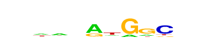

| p-value: | 1e-143 |
| log p-value: | -3.298e+02 |
| Information Content per bp: | 1.680 |
| Number of Target Sequences with motif | 538.0 |
| Percentage of Target Sequences with motif | 3.53% |
| Number of Background Sequences with motif | 312.1 |
| Percentage of Background Sequences with motif | 0.93% |
| Average Position of motif in Targets | 57.5 +/- 21.2bp |
| Average Position of motif in Background | 50.0 +/- 25.8bp |
| Strand Bias (log2 ratio + to - strand density) | -0.4 |
| Multiplicity (# of sites on avg that occur together) | 1.01 |
| Motif File: | file (matrix) reverse opposite |
| Rank | Match Score | Redundant Motif | P-value | log P-value | % of Targets | % of Background | Motif file |
| 1 | 0.926 | 1e-139 | -321.758485 | 5.97% | 2.30% | motif file (matrix) | |
| 2 | 0.871 |  | 1e-131 | -302.110083 | 3.49% | 0.98% | motif file (matrix) |
| 3 | 0.688 | 1e-83 | -193.102517 | 0.33% | 0.00% | motif file (matrix) | |
| 4 | 0.771 | 1e-55 | -127.143667 | 24.66% | 19.47% | motif file (matrix) | |
| 5 | 0.711 | 1e-44 | -101.426491 | 7.17% | 4.61% | motif file (matrix) | |
| 6 | 0.614 | 1e-33 | -76.091065 | 2.65% | 1.37% | motif file (matrix) | |
| 7 | 0.677 | 1e-27 | -63.847027 | 14.29% | 11.36% | motif file (matrix) |